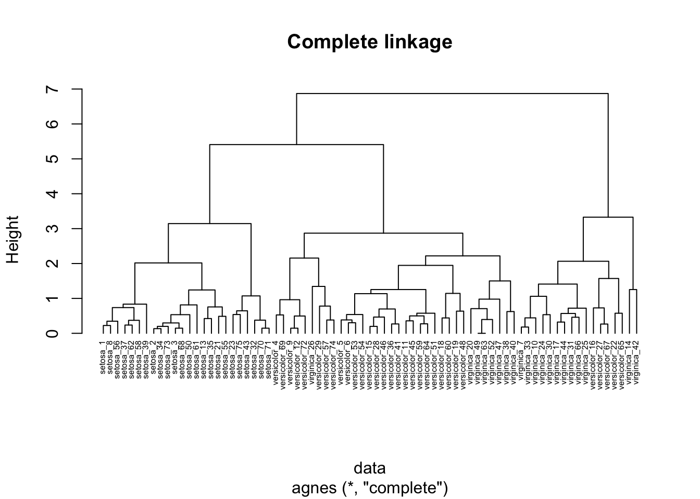
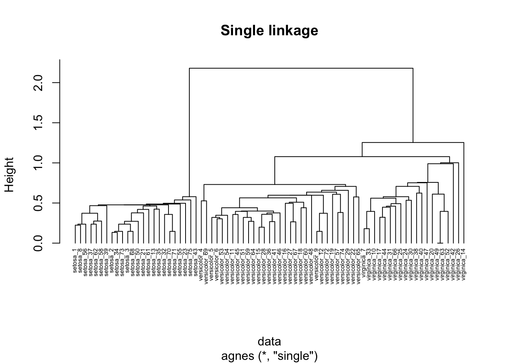
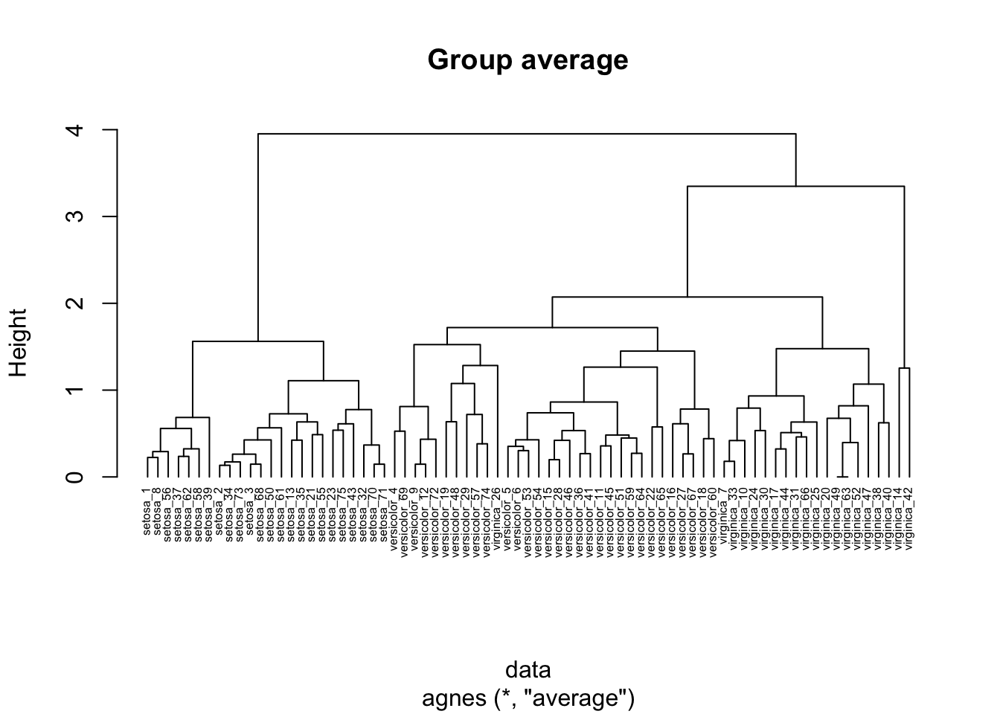
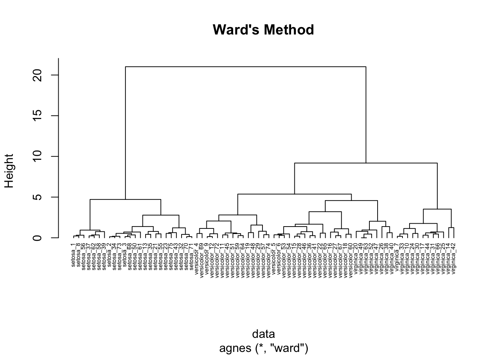

Chapter 26 Hierarchical clustering in R
Portions of this lab activity are adapted from this Hierarchical Cluster Analysis tutorial from the UC Business Analytics R Programming Guide.
In this lab activity, we will
- apply agglomerative and divisive hierarchical clustering techniques to a dataset
- visualize the resulting dendrograms
- cut the dendrograms to extract K clusters
26.1 Dependencies
We’ll use the following packages in this lab activity (you will need to install any that you don’t already have installed):
library(tidyverse) # For data wrangling
library(cluster) # For clustering algorithms26.2 Data preparation
In this lab, we’ll cluster a down-sampled version of the iris dataset. The iris dataset gives measurements (in cm) for 150 flowers, each of which belongs to one of three species of iris: Iris setosa, versicolor, and virginica.
You may need to adjust the file path when you run this R markdown document locally.
data <- read_csv("lecture-material/week-10/iris_data.csv")## Rows: 75 Columns: 5
## ── Column specification ───────────────────────────────────────────────────────────────────────────────────────────────────────────────────────────────────────────────────────────────────────────────────────────────────────────────────────────────
## Delimiter: ","
## chr (1): Species
## dbl (4): Sepal.Length, Sepal.Width, Petal.Length, Petal.Width
##
## ℹ Use `spec()` to retrieve the full column specification for this data.
## ℹ Specify the column types or set `show_col_types = FALSE` to quiet this message.head(data)## # A tibble: 6 × 5
## Sepal.Length Sepal.Width Petal.Length Petal.Width Species
## <dbl> <dbl> <dbl> <dbl> <chr>
## 1 4.4 3 1.3 0.2 setosa
## 2 5.1 3.5 1.4 0.2 setosa
## 3 5.2 3.4 1.4 0.2 setosa
## 4 5.1 2.5 3 1.1 versicolor
## 5 5.9 3 4.2 1.5 versicolor
## 6 6.1 3 4.6 1.4 versicolorIn general, when you perform clustering in R, your data should almost always be prepared as follows:
- Rows are observations/objects that you want to cluster, columns are attributes
- Missing values should be removed or estimated
- Each column (attribute) should be standardized to make attributes comparable. E.g., you might standardize an attribute by tranforming the variables such that they have a mean of 0 and a standard deviation of 1.
The iris dataset doesn’t have missing values, but if it did, we could remove rows with missing values using the na.omit function.
data <- na.omit(data)Next, we’ll scale each attribute that we plan to use for clustering.
data$Sepal.Length <- scale(data$Sepal.Length)
data$Sepal.Width <- scale(data$Sepal.Width)
data$Petal.Length <- scale(data$Petal.Length)
data$Petal.Width <- scale(data$Petal.Width)
head(data)## # A tibble: 6 × 5
## Sepal.Length[,1] Sepal.Width[,1] Petal.Length[,1] Petal.Width[,1] Species
## <dbl> <dbl> <dbl> <dbl> <chr>
## 1 -1.80 -0.0916 -1.41 -1.29 setosa
## 2 -0.863 1.05 -1.35 -1.29 setosa
## 3 -0.728 0.824 -1.35 -1.29 setosa
## 4 -0.863 -1.24 -0.397 -0.0893 versicolor
## 5 0.211 -0.0916 0.321 0.446 versicolor
## 6 0.480 -0.0916 0.560 0.312 versicolorFinally, we’ll tweak the label for each row of our data to include the flower species name. This is not required to perform clustering, but it will make it easier to read the dendrograms that we eventually generate.
# Gen label takes a row ID and a species name and outputs a string that combines
# the two.
gen_label <- function(row_i, species) {
return(paste0(species,"_",row_i))
}
# Rename each row using the gen_label function we wrote.
rownames(data) <- mapply(
gen_label,
row.names(data),
data$Species
)## Warning: Setting row names on a tibble is deprecated.26.3 Hierarchical clustering
Common functions for performing hierarchical clustering in R include:
hclust[instatspackage] for aggolmerative hierarchical clusteringagnes[inclusterpackage] for agglomerative hierarchical clusteringdiana[inclusterpackage] for divisive hierarchical clustering
26.3.1 Agglomerative clustering
We’ll use the agnes function to perform agglomerative clustering on our data.
Run ?agnes to see how you can parameterize it.
Notice that we can specify the proximity method using the method argument.
Below, we’ll perform clustering using complete linkage, single linkage, group average, and Ward’s method.
26.3.1.1 Complete linkage clustering
Here, we use the agnes function to perform clustering using complete linkage proximity.
In complete linkage clustering, the proximity of two clusters is measured as the distance between the two furthest points in the two different clusters.
hc_agg_complete <- agnes(
data,
method = "complete"
)We can use the pltree function in the cluster package to draw the resulting dendrogram.
pltree(
hc_agg_complete,
cex=0.5,
hang=-1,
main="Complete linkage"
)
26.3.1.2 Single linkage clustering
In single linkage clustering, the proximity of two clusters is measured as the distance between the two nearest points in the two different clusters.
hc_agg_single <- agnes(
data,
method = "single"
)
pltree(
hc_agg_single,
cex=0.5,
hang=-1,
main="Single linkage"
)
26.3.1.3 Group average clustering
In group average agglomerative clustering, the proximity of two clusters is measured as the average pairwise proximity between points in the two clusters.
hc_agg_avg <- agnes(
data,
method = "average"
)
pltree(
hc_agg_avg,
cex=0.5,
hang=-1,
main="Group average"
)
26.3.1.4 Ward’s method clustering
Ward’s method of agglomerative clustering uses the potential increase in sum of squared error if two clusters were to be merged in order to measure the proximity of two clusters.
hc_agg_ward <- agnes(
data,
method = "ward"
)
pltree(
hc_agg_ward,
cex=0.5,
hang=-1,
main="Ward's Method"
)
26.4 Extracting K clusters from dendrograms
You can use the cutree function to extract K clusters from a dendrogram produced by hierarchical clustering.
Run ?cutree to read more about its usage.
sub_grp <- cutree(hc_agg_complete, k=3)
table(sub_grp)## sub_grp
## 1 2 3
## 24 34 17sub_grp now associates a cluster ID with each row ID in our data.
We can use dplyr to add an attribute to our original dataframe that labels each row with its associated cluster id (gotten from running cutree on our dendrogram).
data <- data %>%
mutate(
cluster=sub_grp
)26.5 Exercises
- Compare the dendrograms produced by each of the hierarchical clustering methods used in this lab. Do you see any differences?
- Load the data we used for Week 9’s K-means clustering lab activity. Apply a hierarchical clustering method of your choice to those data. Compare the results to using K-means clustering. Describe any differences and/or similarities.
26.6 Further exploration
This lab is intended to introduce you to the functions you can use to perform hierarchical clustering in R. For a more in-depth tutorial of hierarchical clustering analysis with R, see the Hierarchical Cluster Analysis tutorial from the UC Business Analytics R Programming Guide.
In this lab we used the pltree function (from the cluster package) to visualize dendrograms.
However, there are more nifty tools for visualizing/analyzing dendrograms in R; for example: